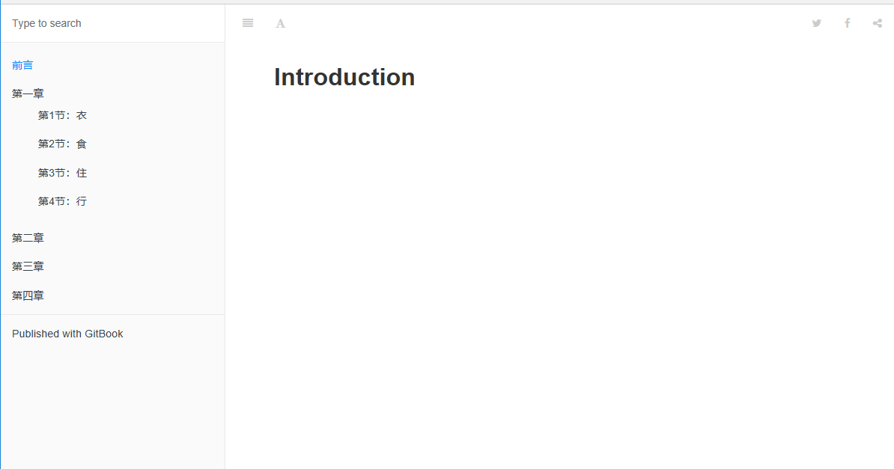

GitBook 使用教程¶
首先先献上 我的 blog 地址，可以在我的博客导航栏处找到，下面进行相关的介绍。
背景¶
由于之前都把零散的知识都写在博客园上，要查找的时候不是很系统化，所以打算挪到GitBook 上来统一管理，而且GitBook 写完编译后可以生成静态页面发布到博客上，逼格满满的样子。
GitBook 简介¶
GitBook 准备工作¶
上面我推荐的是 Node.js + GitBook + Typora + Git，所以你还需要安装 Typora（一个很棒的支持 macOS、Windows、Linux 的 Markdown 编辑工具）和 Git 版本管理工具。戳下面： * Node.js * Typora * Git
安装 Node.js¶
GitBook 是一个基于Node.js 的命令行工具，下载安装 Node.js，安装完成之后，你可以使用下面的命令来检验是否安装成功。
$ node -v v10.5.0
安装 GitBook¶
输入下面的命令来安装 GitBook。
$ npm install gitbook-cli -g
$ gitbook -V CLI version: 2.3.2 Installing GitBook 3.2.3
安装 Typora¶
Typora 的安装很简单，难点在于需要翻墙才能下载（当然你也可以找我要）。Git 的安装也很简单，但要用好它需要不少时间，这里就不展开了（再讲下去你就要跑啦）。
安装 GitBook 编辑器¶
去GitBook 官网 下载 GitBook 编辑器；如果是 Mac 用户且安装过 brew cask 的话可以使用 brew cask install gitbook-editor 命令行来安装 GitBook 编辑器。
先睹为快¶
GitBook 准备工作做好之后，我们进入一个你要写书的目录，输入如下命令。
$ gitbook init warn: no summary file in this book info: create README.md info: create SUMMARY.md info: initialization is finished
# Summary * [Introduction](README.md)

运行该命令后会在书籍的文件夹中生成一个 _book 文件夹, 里面的内容即为生成的 html 文件，我们可以使用下面命令来生成网页而不开启服务器。
gitbook build
Typora 来编辑这两个文件¶
 编辑 SUMMARY.md 文件，内容修改为：
编辑 SUMMARY.md 文件，内容修改为：
# 目录 * [前言](README.md) * [第一章](Chapter1/README.md) * [第1节：衣](Chapter1/衣.md) * [第2节：食](Chapter1/食.md) * [第3节：住](Chapter1/住.md) * [第4节：行](Chapter1/行.md) * [第二章](Chapter2/README.md) * [第三章](Chapter3/README.md) * [第四章](Chapter4/README.md)
Typora 是所见即所得（实时渲染）的 Markdown 编辑器，这时候它是这样的：

接着我们执行 gitbook serve 来预览这本书籍，执行命令后会对 Markdown 格式的文档进行转换，默认转换为 html 格式，最后提示 “Serving book on http://localhost:4000”。嗯，打开浏览器看一下吧：

gitbook 常用命令¶
当你写得差不多，你可以执行 gitbook build 命令构建书籍，默认将生成的静态网站输出到 _book 目录。实际上，这一步也包含在 gitbook serve 里面，因为它们是 HTML，所以 GitBook 通过 Node.js 给你提供服务了。 1. 当然，build 命令可以指定路径：
gitbook build [书籍路径] [输出路径]
gitbook serve --port 2333
gitbook pdf ./ ./mybook.pdf
gitbook epub ./ ./mybook.epub
gitbook mobi ./ ./mybook.mobi
基本命令
gitbook init //初始化目录文件 gitbook help //列出gitbook所有的命令 gitbook --help //输出gitbook-cli的帮助信息 gitbook build //生成静态网页 gitbook serve //生成静态网页并运行服务器 gitbook build --gitbook=2.0.1 //生成时指定gitbook的版本, 本地没有会先下载 gitbook ls //列出本地所有的gitbook版本 gitbook ls-remote //列出远程可用的gitbook版本 gitbook fetch 标签/版本号 //安装对应的gitbook版本 gitbook update //更新到gitbook的最新版本 gitbook uninstall 2.0.1 //卸载对应的gitbook版本 gitbook build --log=debug //指定log的级别 gitbook builid --debug //输出错误信息
除此之外，别忘了还可以用 Git 做版本管理呀！在 mybook 目录下执行 git init 初始化仓库，执行 git remote add 添加远程仓库（你得先在远端建好）。接着就可以愉快地 commit，push，pull … 啦！
下面我们主要来讲讲 book.json 和 SUMMARY.md 文件。
book.json¶
该文件主要用来存放配置信息，我先放出我的配置文件。
{
"title": "Blankj's Glory",
"author": "Blankj",
"description": "select * from learn",
"language": "zh-hans",
"gitbook": "3.2.3",
"styles": {
"website": "./styles/website.css"
},
"structure": {
"readme": "README.md"
},
"links": {
"sidebar": {
"我的狗窝": "https://blankj.com"
}
},
"plugins": [
"-sharing",
"splitter",
"expandable-chapters-small",
"anchors",
"github",
"github-buttons",
"donate",
"sharing-plus",
"anchor-navigation-ex",
"favicon"
],
"pluginsConfig": {
"github": {
"url": "https://github.com/Blankj"
},
"github-buttons": {
"buttons": [{
"user": "Blankj",
"repo": "glory",
"type": "star",
"size": "small",
"count": true
}
]
},
"donate": {
"alipay": "./source/images/donate.png",
"title": "",
"button": "赞赏",
"alipayText": " "
},
"sharing": {
"douban": false,
"facebook": false,
"google": false,
"hatenaBookmark": false,
"instapaper": false,
"line": false,
"linkedin": false,
"messenger": false,
"pocket": false,
"qq": false,
"qzone": false,
"stumbleupon": false,
"twitter": false,
"viber": false,
"vk": false,
"weibo": false,
"whatsapp": false,
"all": [
"google", "facebook", "weibo", "twitter",
"qq", "qzone", "linkedin", "pocket"
]
},
"anchor-navigation-ex": {
"showLevel": false
},
"favicon":{
"shortcut": "./source/images/favicon.jpg",
"bookmark": "./source/images/favicon.jpg",
"appleTouch": "./source/images/apple-touch-icon.jpg",
"appleTouchMore": {
"120x120": "./source/images/apple-touch-icon.jpg",
"180x180": "./source/images/apple-touch-icon.jpg"
}
}
}
}
# Summary
* [Introduction](README.md)
* [Part I](part1/README.md)
* [Writing is nice](part1/writing.md)
* [GitBook is nice](part1/gitbook.md)
* [Part II](part2/README.md)
* [We love feedback](part2/feedback_please.md)
* [Better tools for authors](part2/better_tools.md)
 我们通过使用 标题 或者 水平分割线 将 GitBook 分为几个不同的部分，如下所示
我们通过使用 标题 或者 水平分割线 将 GitBook 分为几个不同的部分，如下所示
# Summary ### Part I * [Introduction](README.md) * [Writing is nice](part1/writing.md) * [GitBook is nice](part1/gitbook.md) ### Part II * [We love feedback](part2/feedback_please.md) * [Better tools for authors](part2/better_tools.md) --- * [Last part without title](part3/title.md)

插件¶
GitBook 有 插件官网，默认带有 5 个插件，highlight、search、sharing、font-settings、livereload，如果要去除自带的插件， 可以在插件名称前面加 -，比如：
"plugins": [
"-search"
]
{
"plugins": [ "github" ],
"pluginsConfig": {
"github": {
"url": "https://github.com/your/repo"
}
}
}
如果要指定插件的版本可以使用 plugin@0.3.1，因为一些插件可能不会随着 GitBook 版本的升级而升级。
结语¶
这是我对 GitBook 使用的总结，希望能帮到今后需要的小伙伴